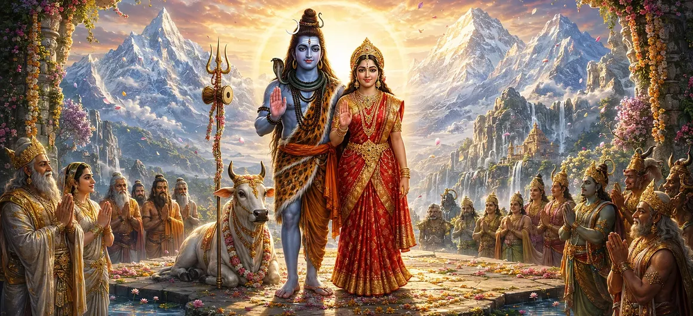

पार्वती खण्ड की पवित्र कथा देवी पार्वती की असाधारण यात्रा - उनके दिव्य जन्म और अटूट तपस्या से लेकर भगवान शिव के साथ उनके गौरवशाली विवाह और कैलास में उनके आगमन तक - का खुलासा करने के बाद अपने शुभ समापन पर पहुंचती है। उनकी कहानी भक्ति, धैर्य, आध्यात्मिक अनुशासन और दैवीय कृपा की शक्ति को प्रदर्शित करती है। शिव और शक्ति के शाश्वत मिलन ने ब्रह्मांडीय सद्भाव को बहाल किया और रुद्र संहिता के भीतर अगले महान उद्देश्य के लिए रास्ता तैयार किया।
पार्वती की यात्रा हिमालय और मैना की प्रिय पुत्री के रूप में उनके जन्म के साथ शुरू हुई। बचपन से ही, उन्होंने असाधारण भक्ति, पवित्रता, ज्ञान और भगवान शिव के साथ एक अटूट संबंध प्रदर्शित किया।
जब पार्वती ने शिव को अपने पति के रूप में प्राप्त करने का संकल्प लिया, तो कोई भी कठिनाई उन्हें उनके पवित्र उद्देश्य से दूर नहीं कर सकी। उसने आराम त्याग दिया, कठोर तपस्या की, अपनी इंद्रियों को नियंत्रित किया और अपने चुने हुए भगवान की याद में लीन रही।
भगवान शिव ने कई तरीकों से पार्वती के दृढ़ संकल्प की परीक्षा ली, फिर भी उनकी भक्ति अपरिवर्तित रही। उनकी पवित्रता और अटूट प्रेम से प्रसन्न होकर, शिव ने उन्हें अपनी शाश्वत पत्नी के रूप में स्वीकार किया और उस पवित्र उद्देश्य को पूरा किया जिसके लिए उन्होंने अपनी तपस्या की थी।
दिव्य विवाह में देवताओं, ऋषियों, दिव्य संगीतकारों, दिव्य परिचारकों और अनगिनत स्वर्गीय प्राणियों को एक साथ लाया गया। इस भव्य समारोह में न केवल शिव और पार्वती के विवाह का जश्न मनाया गया बल्कि चेतना और ब्रह्मांडीय ऊर्जा के पुनर्मिलन का भी जश्न मनाया गया।
पार्वती के कैलास आगमन के साथ, पवित्र पर्वत शिव और शक्ति का दिव्य घर बन गया। शिव का गहन ज्ञान और वैराग्य पार्वती की गर्मजोशी, करुणा, पोषण और रचनात्मक ऊर्जा के साथ जुड़ गया था।
पार्वती की यात्रा दर्शाती है कि सच्ची भक्ति और अनुशासित प्रयास दैवीय कृपा की ओर ले जाते हैं।
उनका शाश्वत मिलन चेतना, ऊर्जा, ज्ञान और क्रिया के सामंजस्य का प्रतिनिधित्व करता है।
पार्वती खण्ड की घटनाएँ धर्म और लौकिक व्यवस्था की रक्षा का मार्ग तैयार करती हैं।
जो लोग भक्तिभाव से पार्वती खण्ड की पवित्र कथा को पढ़ते या सुनते हैं उन्हें कठिनाई के दौरान धैर्यवान रहने और धार्मिक लक्ष्यों के प्रति वफादार रहने की प्रेरणा मिलती है। कहानी मन को शिव और पार्वती की ओर निर्देशित करके शुद्ध करती है।
माना जाता है कि उनकी शादी का समर्पित स्मरण घर के भीतर सद्भाव, आपसी सम्मान, आध्यात्मिक सहयोग और शांति को बढ़ावा देता है। यह विश्वास को मजबूत करता है और साधक को याद दिलाता है कि दैवीय कृपा हर ईमानदार आध्यात्मिक प्रयास का समर्थन करती है।
पार्वती की यात्रा सिखाती है कि भक्ति को धैर्य, साहस, अनुशासन और अटूट विश्वास का समर्थन करना चाहिए। जब हमारा उद्देश्य शुद्ध होता है और हमारा प्रयास ईश्वर को समर्पित होता है, तो कठिनाई शुद्धि का एक रूप बन जाती है और हर चुनौती हमें आध्यात्मिक पूर्ति के करीब ले जाती है।
शिव और पार्वती के मिलन का एक उद्देश्य था जो उनके दिव्य घराने से भी आगे तक फैला हुआ था। देवता अपने शक्तिशाली पुत्र के जन्म की प्रतीक्षा कर रहे थे, जिसके पास तारकासुर को हराने और तीनों लोकों में शांति बहाल करने के लिए आवश्यक शक्ति होगी।
इस प्रकार, पार्वती खण्ड का पूरा होना दैवीय उद्देश्य के अंत का प्रतीक नहीं है। यह कुमार खण्ड की पवित्र घटनाओं के लिए रास्ता खोलता है, जहां शिव और पार्वती के मिलन के परिणाम सामने आएंगे।
पार्वती खण्ड का समापन शिव और पार्वती के कैलास में एक साथ स्थापित होने, देवताओं को आश्वस्त करने, काम को बहाल करने और ब्रह्मांडीय सद्भाव को नवीनीकृत करने के साथ हुआ। प्रत्येक प्रमुख घटना पवित्र कथा के अगले चरण की नींव तैयार करती है।
जो भक्त इस यात्रा को पूरा करता है उसे कुमार खण्ड में आगे बढ़ने के लिए आमंत्रित किया जाता है, जहां धर्म की रक्षा के लिए भगवान कुमार का जन्म, बचपन, दिव्य मिशन और महिमा प्रकट की जाएगी।
"अटूट भक्ति के माध्यम से, पार्वती ने शिव को प्राप्त किया; उनके शाश्वत मिलन के माध्यम से, सृष्टि में सद्भाव लौट आया और दिव्य विजय का मार्ग खुल गया।"
पार्वती खण्ड का समापन पार्वती की भक्ति की पूर्ति, भगवान शिव के साथ उनके पवित्र मिलन और ब्रह्मांडीय सद्भाव की बहाली के साथ होता है। फिर भी उनके विवाह का दिव्य उद्देश्य अभी भी सामने आ रहा है। भगवान कुमार के जन्म, महिमा और पवित्र मिशन की खोज के लिए कुमार खण्ड जारी रखें।